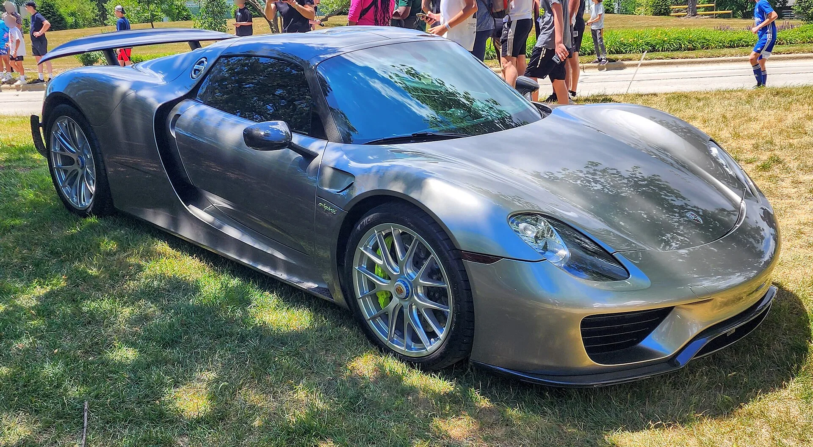
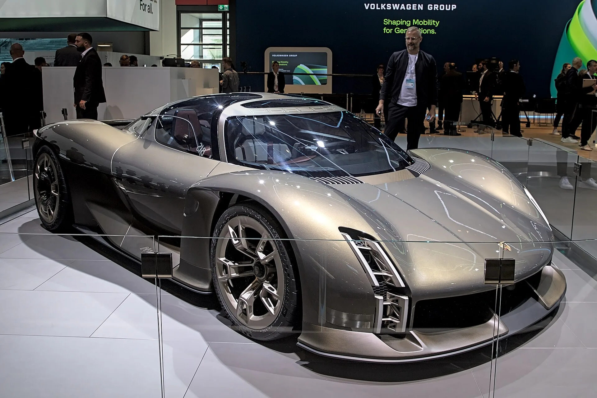
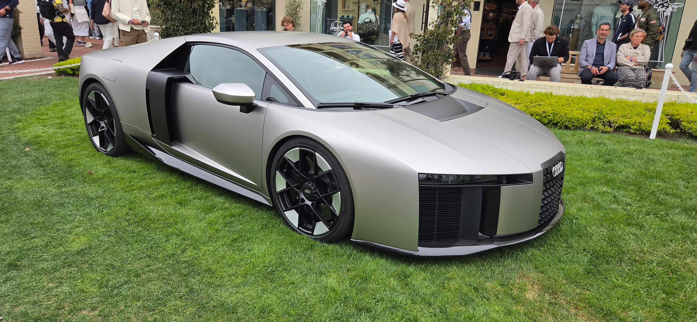

▲ 2013년 출시된 포르쉐 918 스파이더. 포르쉐의 마지막 플래그십 하이퍼카로, 13년째 후속 모델 없이 자리를 지키고 있다
1. 918 스파이더 이후 13년, 플래그십 슈퍼카 재추진
포르쉐가 2013년 918 스파이더를 마지막으로 13년째 비어 있는 브랜드 최상위 플래그십 슈퍼카 자리를 다시 채우기 위한 검토에 들어갔다. 미하엘 라이터스 포르쉐 최고경영자(CEO)는 최근 "현재 제품군에 지나치게 많은 파생 모델이 존재하고, 차종 사이에도 상당한 영역 중복이 있다"고 지적하며 전체 라인업 단순화를 추진하고 있다고 밝혔다. 플래그십 슈퍼카 프로젝트도 이 같은 라인업 재정비 작업의 연장선에서 논의되고 있는 것으로 전해진다.

▲ 포르쉐 911 카레라 GTS. 새 플래그십 슈퍼카 논의와 별개로 911은 브랜드 핵심 모델로 유지되며 완전 전기차로 전환되지 않을 전망이다 ⓒ Wikimedia Commons
2. 미션 X, 순수전기 하이퍼카에서 방향 전환
당초 918 스파이더의 후속작으로 가장 유력했던 것은 2023년 6월 포르쉐 박물관(독일 슈투트가르트)에서 처음 공개된 뒤 같은 해 9월 IAA 모빌리티 뮌헨에도 전시된 순수전기 하이퍼카 콘셉트 '미션 X'였다. 미션 X는 900V 전기 아키텍처를 기반으로, 뉘르부르크링 노르트슐라이페에서 가장 빠른 양산차를 목표로 개발됐다. 무게 대비 출력비는 현행 911 GT3 RS를 웃도는 수준을 지향했고, 맥라렌 W1·페라리 F80 등 경쟁 하이퍼카들과 맞붙을 차세대 전동화 플래그십으로 기대를 모았다.
그러나 최근 포르쉐가 전기차 투자 속도를 조정하고, 상대적으로 수익성이 높은 내연기관·하이브리드 스포츠카에 무게를 두는 방향으로 전략을 선회하면서 미션 X의 양산 가능성은 낮아진 것으로 알려졌다.

▲ 2023년 9월 IAA 모빌리티 뮌헨에 전시된 포르쉐 미션 X 콘셉트. 같은 해 6월 포르쉐 박물관에서 처음 공개됐으며, 순수전기 하이퍼카로 기획됐지만 최근 양산 가능성이 낮아졌다는 평가가 나온다 ⓒ Wikimedia Commons
3. 왜 전기에서 내연기관으로 - 수익성과 속도조절
포르쉐의 방향 전환은 전동화 전환 속도 조절이라는 업계 전반의 흐름과 맞닿아 있다. 완전히 새로운 전기 전용 플랫폼을 처음부터 개발하는 것보다, 검증된 내연기관·하이브리드 기술을 활용한 소량 생산 플래그십이 투자 대비 수익성 측면에서 유리하다는 판단이 작용한 것으로 풀이된다. 포르쉐 감독이사회는 여름 휴가 이후 이 프로젝트의 추진 여부를 최종 결정할 예정인 것으로 전해졌다.
📍 참고로 알아두면 좋은 것
포르쉐 918 스파이더는 4.6L V8 엔진에 두 개의 전기모터를 결합한 플러그인하이브리드 하이퍼카로, 2013년부터 2015년까지 총 918대 한정 생산됐다. 당시 페라리 라페라리, 맥라렌 P1과 함께 '홀리 트리니티'로 불리며 슈퍼카 업계에 하이브리드 시대를 연 모델로 평가받는다. 이후 13년간 포르쉐는 이 자리를 대체할 후속 플래그십을 내놓지 못했다.
4. 아우디 누볼라리·람보르기니 테메라리오 - 플랫폼 공유 전략
새로운 전략의 핵심은 완전히 새로운 플랫폼 개발 대신, 폭스바겐그룹 내 기술 공유를 확대하는 방식이다. 포르쉐는 아우디의 한정판 슈퍼카 누볼라리와 람보르기니 테메라리오의 기술 기반을 활용한 미드십 슈퍼카 개발을 검토 중인 것으로 알려졌다. 람보르기니 테메라리오는 트윈터보 V8 엔진에 플러그인하이브리드 시스템을 결합한 모델로, 기존 V10 우라칸의 후속으로 2025년 출시됐다. 아우디는 올해 6월 이 테메라리오의 기술을 바탕으로 한 초한정판 누볼라리를 공개했는데, 트윈터보 4.0L V8과 3개의 액시얼 플럭스 전기모터를 결합해 합산 987마력을 낸다. 전 세계 생산량은 단 499대로 한정된다.
| 구분 | 람보르기니 테메라리오 | 아우디 누볼라리 |
|---|---|---|
| 출시 | 2025년(우라칸 후속) | 2026년 6월 공개, 499대 한정 |
| 파워트레인 | 트윈터보 4.0L V8 PHEV | 트윈터보 4.0L V8 + 전기모터 3개 |
| 합산 출력 | 테메라리오 기반 수치 | 987마력 |
| 포르쉐와의 관계 | 미드십 슈퍼카 기술 기반 후보 | 플랫폼 공유 유력 후보 |
이미 검증된 슈퍼카 플랫폼을 활용하면 개발 비용과 시간을 크게 단축할 수 있다는 점에서, 전통적으로 독자 플랫폼을 고집해온 포르쉐로서도 매력적인 선택지라는 평가다. 관련 소식은 오토헤럴드 기사에서 확인할 수 있다. 바로가기

▲ 람보르기니 테메라리오. 포르쉐 새 플래그십 슈퍼카가 이 차량과 아우디 누볼라리의 기술 기반을 공유할 가능성이 거론된다 ⓒ Wikimedia Commons

▲ 2026년 6월 공개된 아우디 누볼라리. 트윈터보 V8과 전기모터 3개를 결합해 987마력을 내며, 전 세계 499대 한정 생산된다. 포르쉐 새 플래그십 슈퍼카의 유력한 기술 기반 후보로 거론된다 ⓒ Wikimedia Commons

▲ 람보르기니 우라칸 테크니카. V10 자연흡기 엔진을 쓴 마지막 세대 우라칸으로, 2025년 하이브리드 후속 테메라리오에 자리를 넘겨줬다 ⓒ Wikimedia Commons
5. 전동화 속도조절 트렌드와 911의 자리
포르쉐의 이번 방향 전환은 최근 슈퍼카·하이퍼카 업계 전반에서 나타나는 전동화 속도조절 흐름과도 궤를 같이한다. 완전 전기 하이퍼카를 표방했던 브랜드들이 배터리 무게·주행거리·충전 인프라의 한계를 재확인하면서, 내연기관과 전기모터를 결합한 하이브리드 방식으로 회귀하는 사례가 늘고 있다. 포르쉐 역시 브랜드의 핵심 모델인 911을 완전 전기차로 전환하지 않고 내연기관·하이브리드 기반으로 유지하겠다는 방침을 재확인한 바 있어, 이번 플래그십 슈퍼카 논의도 이 같은 큰 흐름의 연장선으로 볼 수 있다.
✅ 포르쉐 새 플래그십 슈퍼카, 이것만은 확인하세요
· 2013년 918 스파이더 이후 13년 만의 신규 플래그십 슈퍼카 검토
· 2023년 공개된 순수전기 하이퍼카 '미션 X' 양산 가능성은 낮아진 상태
· 아우디 누볼라리·람보르기니 테메라리오 기술 기반 미드십 슈퍼카로 방향 전환 검토
· 포르쉐 감독이사회, 여름 휴가 이후 프로젝트 추진 여부 최종 결정 예정
· 911은 브랜드 핵심 모델로 유지, 완전 전기차 전환 계획 없음
6. 정리
포르쉐의 새 플래그십 슈퍼카 프로젝트는 13년 만의 후속 하이퍼카라는 기대와 함께, 순수전기에서 내연기관·하이브리드로 방향을 되돌리는 상징적 사례로 주목받고 있다. 아우디 누볼라리·람보르기니 테메라리오와의 플랫폼 공유를 통해 개발 비용과 시간을 줄이려는 전략은, 완전 전동화 속도를 조절하고 있는 최근 슈퍼카 업계 전반의 흐름과도 맞닿아 있다. 감독이사회의 최종 결정이 나오기까지는 시간이 남았지만, 918 스파이더의 후계자가 전기 대신 엔진 소리를 내며 등장할 가능성이 한층 높아진 모습이다.